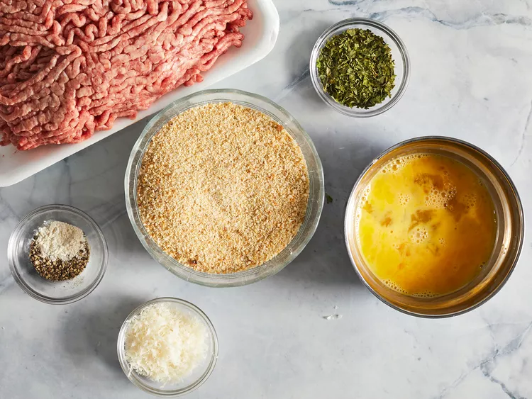
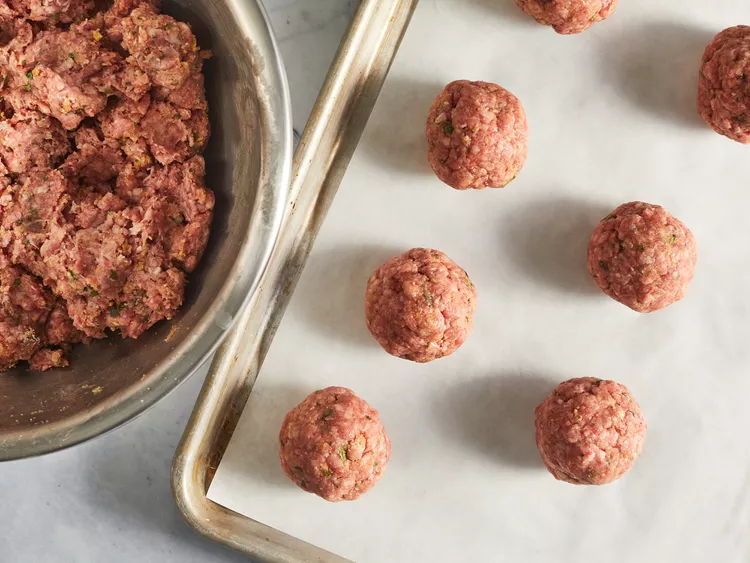
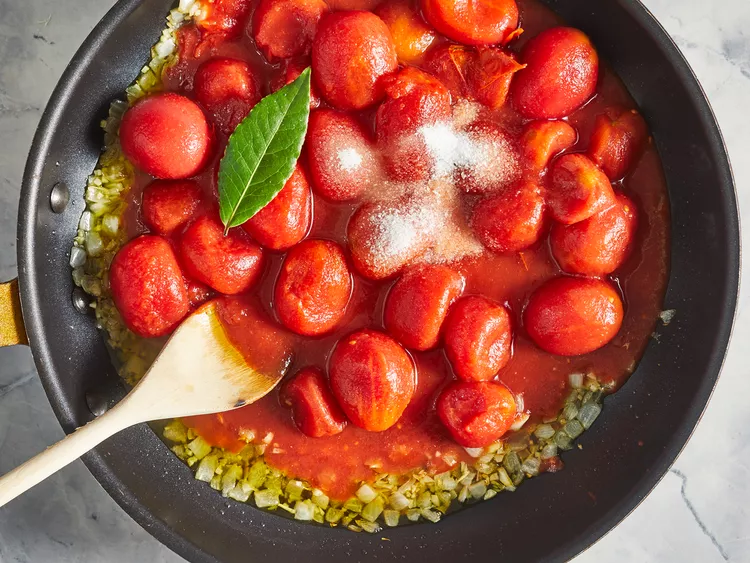
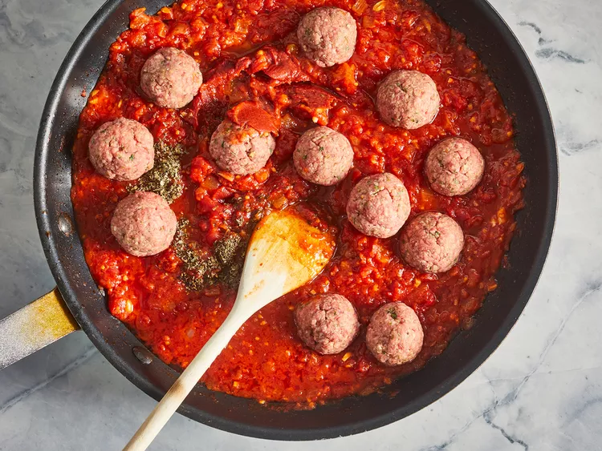

Spaghetti and Meatballs

Description
This is an Italian-style pasta sauce with homemade meatballs that's cooked slowly over low heat for an intense tomato flavor. It's easy to make the spaghetti sauce ahead of time; gently reheat and add meatballs 30 minutes before you're ready to serve with your favorite pasta.
Ingredients
Meatballs:
- 1 pound lean ground beef
- 1 cup fresh bread crumbs
- 1 tablespoon dried parsley
- 1 tablespoon grated Parmesan cheese
- ¼ teaspoon ground black pepper
- ⅛ teaspoon garlic powder
- 1 egg, beaten
Sauce:
- ¾ cup chopped onion
- 5 cloves garlic, minced
- ¼ cup olive oil
- 2 (28 ounce) cans whole peeled tomatoes
- 2 teaspoons salt
- 1 teaspoon white sugar
- 1 bay leaf
- 1 (6 ounce) can tomato paste
- ¾ teaspoon dried basil
- ½ teaspoon ground black pepper
Steps
- Gather all ingredients. 
- In a large bowl, combine ground beef, bread crumbs, parsley, Parmesan, 1/4 teaspoon black pepper, garlic powder and beaten egg. Mix well and form into 12 balls. Store, covered, in refrigerator until needed. 
- In a large saucepan over medium heat, saute onion and garlic in olive oil until onion is translucent.
- Stir in tomatoes, salt, sugar and bay leaf. Cover, reduce heat to low, and simmer 90 minutes. 
- Stir in tomato paste, basil, 1/2 teaspoon pepper and meatballs and simmer 30 minutes more. 
- Serve hot and enjoy!